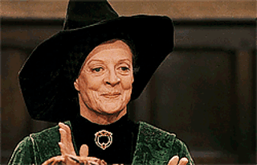
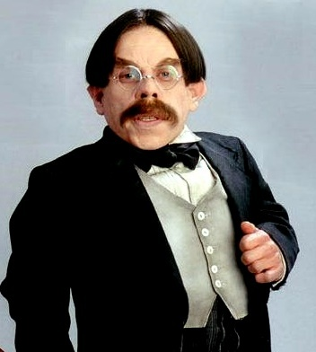
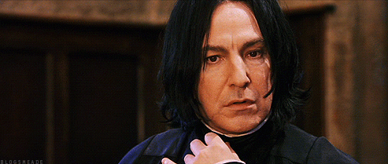
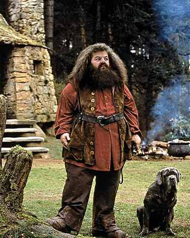
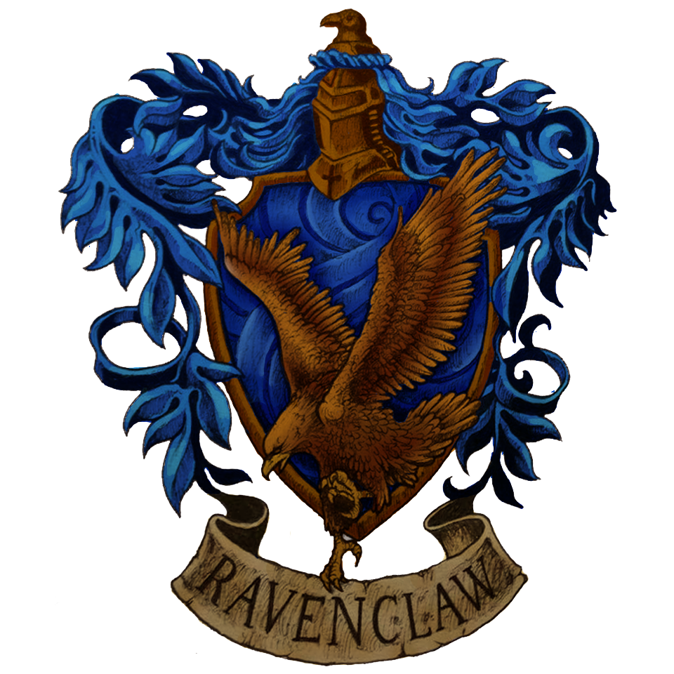
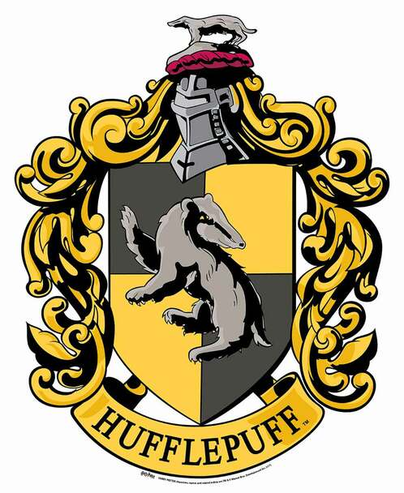

MOST LOVED PROFFESSORS
Head master: Professor Albus Percival Wulfric Brian Dumbledore
Dumbledore had silver hair and beard long enough to tuck into his belt; he was very tall and extremely thin, and had light, bright blue eyes. His nose was very long and crooked and he wore half-moon spectacles and high-heeled, buckled shoes .

Transfiguration professor and head of gryffindoor house: Proffessor Minerva McGonagall
McGonagall was a rather severe-looking woman with square glasses and black hair drawn tightly into a bun. Her colour of choice for robes was emerald-green . McGonagall was very strict and very clever.

Charms professor and head of ravenclaw house: Professor Filius Flitwick
Flitwick was an extremely short man due to his goblin ancestry; he had neatly parted, shining chestnut-brown hair and a rather bushy moustache. He wore small round glasses over his warm brown eyes, and had pallid, wrinkled skin.
Herbology professor and head of hufflepuff house: Pofessor Pomona Sprout
Sprout was slightly overweight, and was rather short. She had flyaway grey hair and a large amount of dirt beneath her finger-nails. Her eyes were wide and blue, and she had light skin

Potions professor and head of slytherin house: Proffesor Severus Snape
Snape had long, greasy black hair, a hooked nose and sallow skin. His black eyes were like cold, empty tunnels. He was small, sallow, stringy and skinny . Cruel, sarcastic and bitter, Snape frequently insulted his students and displayed blatant favouritism towards Slytherin, his own house.

Keeper of Keys and Grounds, Gamekeeper and Care of Magical Creatures professor:Professor Rubeus Hagrid
Rubeus Hagrid is a half-giant with shaggy hair and a “wild, tangled beard” who serves as the Keeper of Keys and Grounds, Gamekeeper, and Care of Magical Creatures professor at Hogwarts. He is excessively fond of “interesting creatures” — that anyone else would call fearsome monsters.
HOUSES
There are 4 houses in hogwarts-Gryffindoor, Ravenclaw, Hufflepuff and Slitherin
Gryffindor
Gryffindor was one of the four Houses of Hogwarts School of Witchcraft and Wizardry and was founded by Godric Gryffindor. Gryffindor instructed the Sorting Hat to choose students possessing characteristics he most valued, such as courage, chivalry, and determination, to be sorted into his house. The emblematic animal was a lion, and its colours were scarlet and gold. Sir Nicholas de Mimsy-Porpington, also known as "Nearly Headless Nick", was the House ghost

Ravenclaw
Ravenclaw is one of the four Houses of Hogwarts School of Witchcraft and Wizardry, founded by Rowena Ravenclaw. Members of this house are characterised by their wit, learning, and wisdom. Its house colours are blue and bronze, and its symbol is an eagle. The house ghost, who in life was the daughter of the house's founder Rowena Ravenclaw, is the Grey Lady.

Hufflepuff
Hufflepuff was one of the four Houses of Hogwarts School of Witchcraft and Wizardry. Its founder was the medievalwitchHelga Hufflepuff. Hufflepuff was the most inclusive among the four houses, valuing hard work, dedication, patience, loyalty, and fair play rather than a particular aptitude in its members. The emblematic animal was a badger, and yellow and black were its house colours. The Head of Hufflepuff was Pomona Sprout, and the Fat Friar was the House's patron ghost.
Slytherin
Slytherin was one of the four Houses at Hogwarts School of Witchcraft and Wizardry, founded by Salazar Slytherin. In establishing the house, Salazar instructed the Sorting Hat to pick students who had a few particular characteristics he most valued. Those characteristics included cunning, resourcefulness, leadership, and ambition. Many Slytherin students tended to clique together, often acquiring leaders, which further exemplified Slytherin's ambitious qualities. Examples of these included Draco
MATERIALS NEEDED FOR FIRST YEARS
First-year students would require:
Uniform
Three Sets of Plain work robes (Black).
One Plain Pointed Hat (Black) for day wear.
One Pair of Protective Gloves (dragon hide or similar).
One Winter Cloak (Black, silver fastenings).
Please note that all student's clothes should carry name-tags at all times.
Books
The Standard Book of Spells, Grade 1 by Miranda Goshawk
A History of Magic by Bathilda Bagshot
Magical Theory by Adalbert Waffling
A Beginner's Guide to Transfiguration by Emeric Switch
One Thousand Magical Herbs and Fungi by Phyllida Spore
Magical Drafts and Potions by Arsenius Jigger
Fantastic Beasts and Where to Find Them by Newt Scamander
The Dark Forces: A Guide to Self-Protection by Quentin Trimble
Other Equipment
1 Wand
1 Cauldron (pewter, standard size 2)
1 set of glass or crystal phials
1 telescope
1 set of brass scales
Students may also bring an Owl OR a Cat OR a Toad.
PARENTS ARE REMINDED THAT FIRST YEARS ARE NOT ALLOWED THEIR OWN BROOMSTICKS.